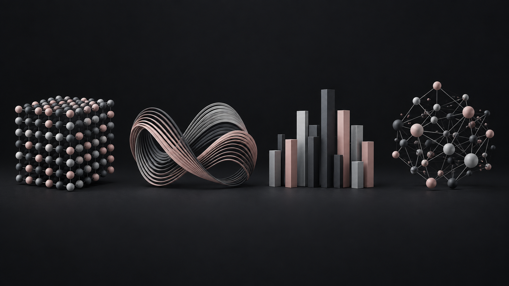

Сентябрь 2026 — сейчас
МИ ФНС России
по управлению долгом
Работа с данными в 1С и информационных системах, автоматизация проверок в Excel.
Аналитик данных и автоматизации
Нахожу связи, замечаю расхождения и превращаю повторяющиеся задачи в работающие решения.
Исследовать проектыОдин набор данных. Три взгляда.
Мне интересно понять, откуда берётся ошибка, что усложняет работу и как сделать результат понятным людям. Поэтому я соединяю анализ данных, автоматизацию и внимание к деталям.
Четыре визуальных образа моих проектов. Выбери тему, затем открой разбор проекта.

ПРОВЕРИТЬ
Четыре демонстрационных кейса.
Логика, артефакты и выводы — открыто.
Люблю наводить порядок в сложном.
Работаю с данными и отчётностью, сверяю выгрузки из 1С и автоматизирую повторяющиеся проверки. Для меня решение заканчивается тогда, когда им удобно пользоваться.
Открыть резюме PDFРабота с данными в 1С и информационных системах, автоматизация проверок в Excel.
Ведущий аналитик. Автоматизация отчётности, проверка данных, инструкции и поддержка пользователей.
МФЮА · Бизнес-информатика.
Бакалавриат по менеджменту завершён в 2025 году.
Формулы, сверки, обработка файлов и автоматизация отчётности.
Работа с выгрузками, поиск расхождений, контроль полноты и связей.
Базовый уровень и практика в портфолио: запросы, pandas, метрики и дашборды.
Учебные кейсы: описание процессов, требования и критерии приёмки.
Аналитика · Отчётность · Автоматизация